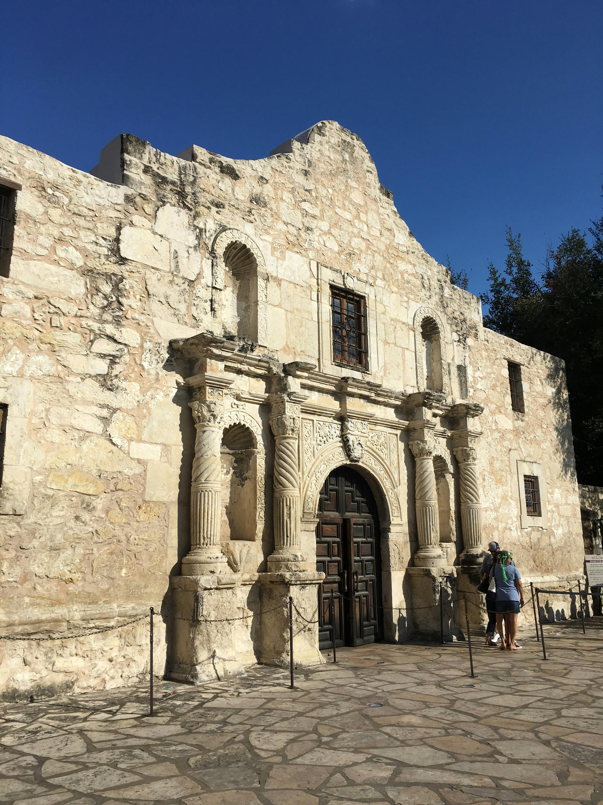

Welcome to The Alamo City - San Antonio
About San Antonio
- San Antonio has about 1.4 million people.
- It reflects its role as a culturally and historically meaningful city where people from different backgrounds come together to celebrate its unique heritage.
- San Antonio is a unique city.
- From the Alamo's historic history to the famous San Antonio River Walk, which people love to visit and see every year.
- Like many other cities in the United States, San Antonio has a storied past with modern urban growth.
- It preserves its cultural roots while embracing the future.
City Overview
San Antonio, one of the most historically significant cities in Texas, is renowned for its deep cultural roots and historical landmarks. The city is famously home to the Alamo, where a pivotal battle during the Texas Revolution took place, solidifying its place in Texan and American history. In addition to the Alamo, San Antonio is known for its picturesque River Walk, a winding network of walkways along the San Antonio River that is lined with restaurants, shops, and cultural attractions. Established in 1718 as a Spanish colonial outpost, San Antonio has grown into a thriving metropolis that blends tradition with modern urban development. The city’s diverse cultural heritage, reflected in its festivals, cuisine, and architecture, makes it a vibrant and welcoming destination for residents and visitors alike.
San Anotion is located in South-Central Texas. The city's cultural and economic cross-over between the state's regions. San Antonio is classified as an urban metropolis. The town's characteristic is a dynamic of commerical, historic areas and residental mixed. The city's layout is characterized by its great neighborhoods, historic districts, and rich cultural and recreational resource. San Antonio has a unique location near the the Gulf Coastal and the Hill Country which plains a great overlooks of the city historical significance and its modern growth, contributing to its standing as one of Texas' most significant urban centers.
Average Income and Economy
San Antonio's economy is wide and includes great areas such as tourism, healthcare, military, and education. In 2022, San Antonio's median household income was almost 60k this indicates a well-balanced economy for the city and the people living in San Antonio. San Antonio's tourist business thrives due to its historical landmarks, cultural events, and family-friendly activities, driving economic growth. San Antonio is a very low cost of living and it what makes a great place for families and bussiness to come in.